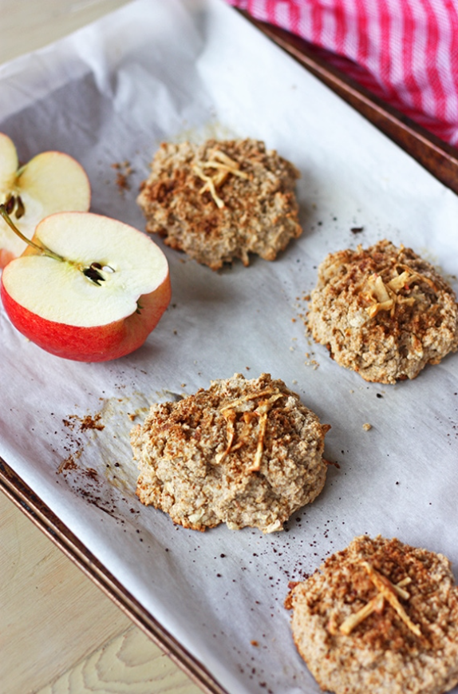

Apple Cinnamon Oatmeal Scones
Rich and comforting, these buttery Apple Cinnamon Oatmeal Scones feature flavours of tart apples, hearty oats, and spicy cinnamon.

Tools You Need
Ingredients
1 2/3 cups All-Purpose-Flour
1/2 cup Quick-Cooking Oats
1/2 cup Brown Sugar (packed)
1/2 cup Cold Salted Butter
1 cup Thinly Chopped Apples
1 teaspoon Vanilla Extract
+Optional+ Coarse Sugar And Oats To Sprinkle On Top As Garnish
Cooking Instructions
Preheat the oven to 400℉. Line a baking sheet with parchment paper
Whisk the flour, oats, brown sugar, cinnamon, and baking powder together in a large bowl. Cut the cold cubed butter into the flour mixture using a pastry cutter until the pieces of butter are the size of peas. Fold in the chopped apples
In another bowl, whisk together the whipping cream, egg, and vanilla. Add to the flour/butter/apple mixture and gently fold with a spatula until the dough just starts to come together. Turn the contents of the bowl onto the countertop and knead/press the mixture just until the dough comes together
Shape the dough into 3 even rounds each about 1 inch thick. Cut each round into 4 even wedges using a large knife and arrange them on the prepared baking sheet. Top each scone with a sprinkle of coarse sugar and oats, if desired. Bake in the preheated oven for 15-18 minutes or until golden
Enjoy!
Back To Home Page